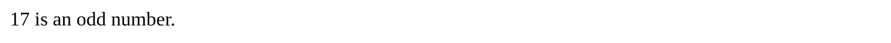

Create a PHP code to check whether a number is even or odd.
Program 3.2: Checking Whether a Number Is Even or Odd
Concepts used
The modulus operator %, the comparison operator ==, the if-else statement.
Test data: Number: 17.
Logic
- Store the number.
- Find the remainder of the number divided by 2.
- If the remainder is 0, display that the number is even; otherwise, display that it is odd.
Code
<!DOCTYPE html><html lang="en"><head> <meta charset="UTF-8"> <title>Even or Odd</title></head><body> <?php $number = 17; if ($number % 2 == 0) { echo "$number is an even number."; } else { echo "$number is an odd number."; } ?></body></html>
Output
These are real screenshots, taken by running the program with the test data.

Understanding the output
The number 17 leaves a remainder of 1 when divided by 2, so it is odd. The results for other values of $number are given in Table 3.2.
Table 3.2: Test Cases for Program 3.2
| Number | $number % 2 | Output |
|---|---|---|
| 17 | 1 | 17 is an odd number. |
| 24 | 0 | 24 is an even number. |
| 0 | 0 | 0 is an even number. |
| -7 | -1 | -7 is an odd number. |
How it works
The expression $number % 2 divides 17 by 2 and gives the remainder 1. The condition 1 == 0 is false, so the if block is skipped and the else block prints the message for an odd number. Because the operator % has higher precedence than ==, the remainder is calculated before the comparison is made.
Run it yourself
Real PHP 8.3 runs inside your browser (nothing is sent to a server). Forms, links, cookies and sessions work as they do in XAMPP. The first run downloads PHP, so it needs internet and takes a few seconds.
Try this:
- Change the number to 24, then to 0, then to -7.
- Change the program to check whether the number is divisible by 5.
Running it in XAMPP
Save the file in C:\xampp\htdocs\phpbook\ch03 and open http://localhost/phpbook/ch03/even-odd.php.
Common mistakes
- Writing
$number% 2 = 0, which is an attempt to assign a value to an expression and causes an error. - Testing
$number% 2 == 1 for odd numbers, which gives the wrong answer for negative odd numbers. - Using / in place of %; the division 17 / 2 gives 8.5, not the remainder.
Viva questions
What does the % operator give?
How do you test whether a number is even?
$number % 2 == 0.